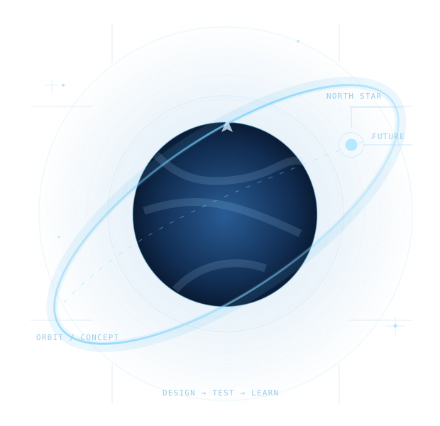

航天 / 实验工程
AI Rocket · Project Ad Astra
一个围绕小型实验火箭与 EDF 推力矢量控制的软硬件协同项目，覆盖飞控固件、地面站、动力学仿真、遥测与确定性离线回放。它也是我用真实工程约束学习控制理论的地方。
查看公开仓库CURRENT EVIDENCE
离线软件回放与测试已有记录；尚未获得实物系统与飞行合格性验证。历史 CAD 不代表制造放行。
离线软件回放与测试已有记录；尚未获得实物系统与飞行合格性验证。历史 CAD 不代表制造放行。
我是郭家吉（Jiaji Guo），飞行器制造工程本科生，也是一名在 AI、软件和实体工程之间不断试错的独立开发者。我想参与建立一种未来：普通人也有机会真正走向太空、探索未知。

不是一句口号，是要用很多年去接近的目标。
这件事需要资金、组织、制造、控制、安全、基础科学和长期的工程积累。我目前还没有能力实现它。所以我选择从能独立推动的工作开始：构建有用的 AI 产品，用商业反馈锤炼解决问题的能力；再持续推进真正可检验的硬件和航天技术。理想可以很大，阶段结论必须诚实。
先找到愿意付费或实际使用的需求；让技术为别人节省时间、降低成本。
把软件、控制、仿真、机械设计、测试证据串起来，承认能力和验证边界。
长期形成团队、产品、资金与技术积累；具体路径允许随着真实证据调整。
下列项目跨 AI、产品与航空航天。公开仓库是可核验的工作记录；私有项目只介绍方向，不公开代码或敏感细节。
一个围绕小型实验火箭与 EDF 推力矢量控制的软硬件协同项目，覆盖飞控固件、地面站、动力学仿真、遥测与确定性离线回放。它也是我用真实工程约束学习控制理论的地方。
查看公开仓库帮助长期运行的 AI Agent 检查证据有效性、记录决策依据，并根据执行后的真实反馈重新判断。
研究与开发中；正式效果仍需评测 查看公开仓库探索 AI 辅助机械工程研发：从任务约束、计算与设计，到有界执行和独立评价。
工程原型；仍有待验证能力 了解合作方式针对短视频与社交应用连续使用的渐进式干预工具，强调本地运行与用户控制。
MVP；发布准备中 查看公开仓库探索用结构化剧本、分镜、图片与视频工作流减少短剧生产的重复劳动。
实验产线；质量仍在迭代 了解合作方式研究大模型与低成本嵌入式设备之间轻量、受约束的物理执行协议。
草案与探索；非行业标准 查看公开仓库基于 Moonlight Android（GPLv3）二次开发，探索面向平板触控的低延迟 PC 串流体验。
开发项目；基于上游开源 查看公开仓库学习从控制律与软件回放走向台架验证的完整证据链；将“代码能运行”和“系统可安全运行”严格区分。
为智能体增加可观察、可接管的真实浏览器操作能力：结构化 DOM 快照、引用式点击与会话隔离。查看插件仓库 ↗
这里列出部分公开的工程记录，也欢迎检查其中的限制和未解决问题。
所有状态说明均为审慎摘要。具体测试范围、缺陷与适用性以对应项目仓库文档为准，尤其不能把软件回归当作硬件安全证明。 更多公开项目 ↗
2024 年，我开始系统学习飞行器制造工程。与此同时，我持续通过开源开发、独立项目和工程实验，补足课堂与真实工程之间的距离。
我喜欢研究新工具，但真正吸引我的不是技术名词，而是技术能否改变现实。未来我可能创业、进入工程团队、继续深造——路径尚未锁定，长期方向始终指向航天。
工作之外，我也想慢慢学习音乐创作与钢琴，去旅行、接近自然。人生不必只有一个维度。
进入南昌航空大学科技学院，学习飞行器制造工程。开始用工程项目连接理论与实践。
在杭州完成暑期实习，参与 AI 工作流及协作软件相关开发；继续推进独立开源与工程项目。
围绕 AI Agent、工程软件、飞控仿真和小产品验证持续迭代；比功能数量更关心是否有真实结果。
逐步形成能力、团队与资源，寻找让更多人参与太空探索的可行道路。
欢迎讨论开源协作、AI 自动化、工程软件、科研与航天探索，尤其愿意和有真实问题、愿意共同验证方案的人交流。可以通过微信、邮件或 GitHub 联系我。
15015091629@163.com

其他社交账号（B站、公众号、小红书等）将在确认准确链接后陆续添加。